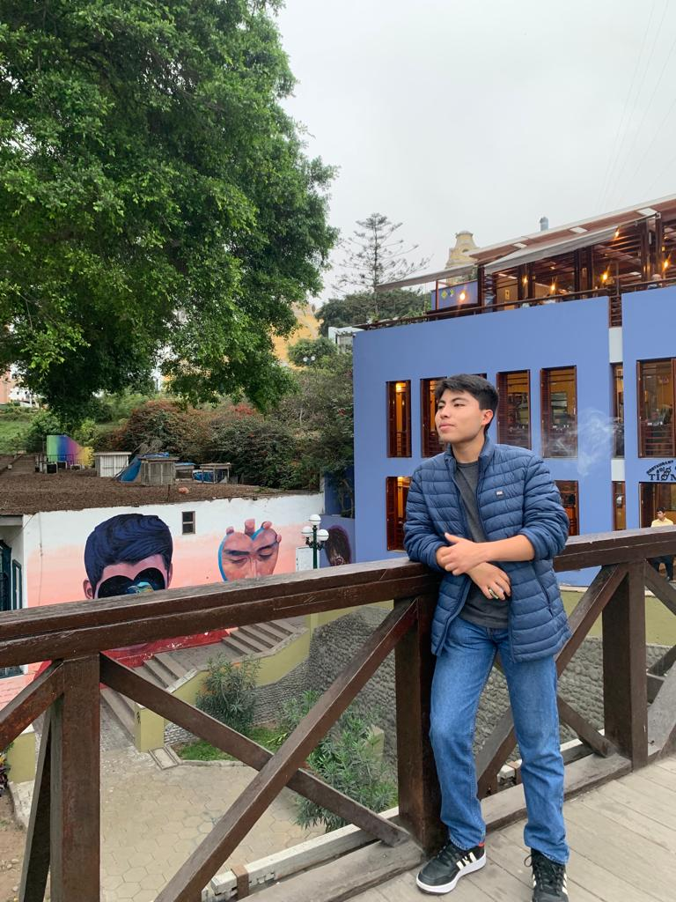
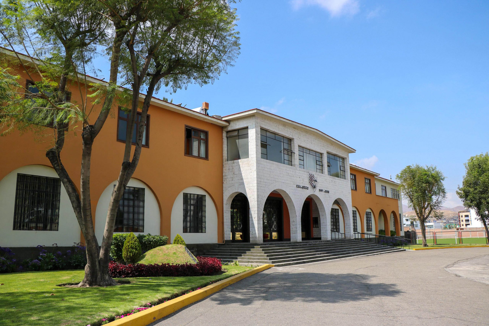
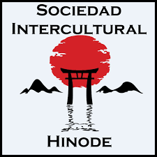
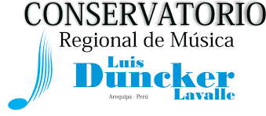
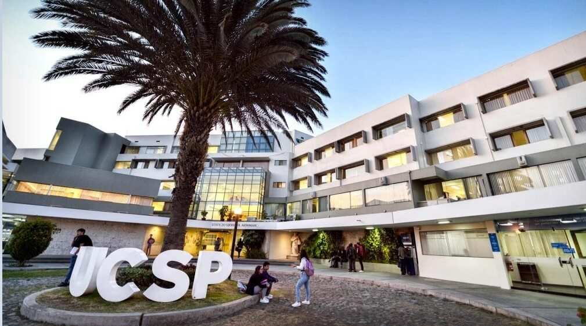

Mi nombre completo es Mattias Ronny Melgar Ortiz, estudiante de Computer Science en la Universidad Católica San Pablo, apasionado por aprender cosas nuevas, el arte y especialmente por la música. Mi trayectoria académica escolar fue en el colegio San José en Arequipa, Perú. He tenido el privilegio de trabajar en proyectos emocionantes con personas sumamente asombrosas y de haber tenido profesores de la más alta calidad educativa, lo que me ha permitido desarrollar habilidades en muchos ámbitos que encontrarás aquí. Cuando no estoy inmerso en el mundo profesional, me encanta crear contenido y compartirlo con todos; ser comunicativo es una de las cualidades que más aprecio. Esta combinación de pasión y experiencia me impulsa a explorar continuamente nuevas oportunidades y desafíos. Estoy aquí para compartir mi viaje profesional y personal contigo. Espero que disfrutes explorando mi página web y que no dudes en ponerte en contacto conmigo si tienes alguna pregunta, necesitas servicios profesionales o simplemente deseas charlar sobre algún tema relacionado con todo lo anterior. ¡Gracias por visitar mi espacio digital!
A continuación, encontrarás un índice interactivo para facilitar la navegación.
Nací el 8 de agosto de 2005 en Arequipa, Perú. Soy el hermano mayor de una hermosa familia con mucha historia detrás. Crecí con el apoyo constante de mis padres, mi hermana menor y mis abuelos. Soy un amante de la comida; disfruto probando todo tipo de platillos y bebidas, lo que me convierte en una persona con gustos culinarios muy variados. La música es una de mis pasiones; soy un melómano al 100%. Escucho música de diversos géneros, pero tengo preferencia por el rock, el ska, el jazz y la salsa. Además, soy multiinstrumentista y toco varios instrumentos de distintos tipos, aunque tengo una debilidad especial por la percusión. Domino dos idiomas, el español y el inglés, y actualmente estoy aprendiendo japonés. Decidí estudiar ciencias de la computación desde muy joven debido a mi curiosidad por conocer el funcionamiento de las computadoras y la razón de su existencia. Soy un enamorado de la naturaleza y de los espacios verdes y libres. Los animales, especialmente los perritos, tienen un lugar especial en mi corazón. Además, me considero una persona muy detallista y sociable. Estoy emocionado por lo que el futuro me depara y ansioso por aprender y crecer en cada experiencia que la vida me presente.
Mis estudios iniciales, primarios y secundarios, los realicé en el Colegio San José de los Jesuitas en Arequipa, Perú. Considero este lugar como mi segundo hogar, ya que el San José fue testigo de mi crecimiento y contribuyó significativamente a la persona que soy en la actualidad. Esta institución siempre ha estado atenta a sus estudiantes, fomentando que saquen lo mejor de sí mismos en los ámbitos deportivos, artísticos y académicos.
Estudié inglés en el Centro de Idiomas de Senati, donde, además de mi colegio, tuve la oportunidad de rendir y aprobar los exámenes de Cambridge English.
Estudié japonés básico durante 9 meses en el Centro Cultural Peruano Japonés en el año 2021. Aprobé el curso y obtuve la certificación en japonés básico.
Pude estudiar iniciación musical, música general y percusión básica durante un tiempo en el conservatorio, donde obtuve diplomas por aprobar los exámenes finales.
Actualmente estudio Computer Science en la UCSP, universidad de la cual me siento muy orgulloso y contento. Estoy haciendo buenos amigos y amigas, conociendo y aprendiendo de profesores de la más alta calidad. No solo estoy enfocado en la parte académica, sino también en la dimensión humana de ser un profesional en Computer Science. Me llena de alegría la idea de graduarme y titularme en unos años.
| Curso | Descripción | Maestros |
|---|---|---|
| Matemática | La matemática universitaria es una disciplina académica que se enfoca en el estudio profundo de conceptos matemáticos avanzados, teoría y aplicaciones. Este campo abarca áreas como álgebra, cálculo, geometría, estadísticas y teoría de números, entre otros. Los estudiantes universitarios exploran métodos rigurosos y abstractos para resolver problemas matemáticos complejos, desarrollando habilidades analíticas y de razonamiento. | Vidal Martin Bolaños Ugarte - Kely Fany Anco Torres |
| Estructuras Discretas | Las estructuras discretas son un área fundamental de las matemáticas universitarias que se centra en objetos matemáticos separados y contables, como conjuntos, grafos, y árboles, entre otros. Este campo explora la lógica, la teoría de números, y la teoría de conjuntos, junto con la combinatoria y la teoría de grafos. Las estructuras discretas son esenciales en ciencia de la computación, ya que proporcionan la base para el diseño de algoritmos eficientes, la teoría de la información y la criptografía. | Kelly Vizconde La Motta |
| Programación de Videojuegos | La programación de videojuegos en Python implica escribir código para controlar personajes, manejar colisiones, crear animaciones y gestionar la lógica del juego. Python ofrece una sintaxis clara y legible, lo que facilita el proceso de desarrollo, especialmente para principiantes. Además, la comunidad de Python es activa y proporciona una amplia gama de recursos y tutoriales para ayudar a los desarrolladores a aprender y mejorar sus habilidades en la creación de videojuegos. | Graciela Lecireth Meza Lovón - Kelly Vizconde La Motta |
| Comunicación | La comunicación se refiere al proceso de intercambio de información, ideas, pensamientos y sentimientos entre individuos o grupos. Es esencial para la interacción humana y juega un papel fundamental en todas las áreas de la vida. La comunicación puede ocurrir verbalmente, a través del habla y las palabras, o no verbalmente, mediante gestos, expresiones faciales y lenguaje corporal. | David Néstor Zegarra Panca |
| Metodología del Estudio | La metodología del estudio se refiere al enfoque, las técnicas y las estrategias que los estudiantes utilizan para aprender y comprender nuevos conceptos, así como para retener y aplicar el conocimiento adquirido. Es fundamental para el éxito académico y puede variar según el individuo y el tipo de material de estudio. Algunas técnicas comunes incluyen la lectura activa, la toma de notas, el resumen de información, la realización de ejercicios prácticos, la colaboración con otros estudiantes, y la revisión regular del material. | Lourdes Verónica Ortega Palma |
| Introducción a la vida Universitaria ( Ivu ) | Explicación e introducción a conceptos básicos humanos y filosóficos sobre ser universitario y toda la historia detrás de esos conceptos | Lilian Esperanza Moscoso Prieto |
| Introducción a Ciencia de la Computación ( Icc ) | La Ciencia de la Computación es un campo de estudio enorme con muchas especialidades y aplicaciones. Este curso brindará a sus participantes, una visión panorámica de la Computación y mostrará sus campos más representativos, como son: Algoritmos, Estructuras de de Datos, Sistemas Operativos, Bases de Datos, etc. | Ernesto Cuadros Vargas |
| Ciencia de la Computación | La Ciencia de la Computación orientada a C++ es un curso fundamental que introduce a los estudiantes en los conceptos esenciales de la programación y la informática utilizando el lenguaje de programación C++. Durante el curso, los participantes adquieren habilidades básicas de programación, comprenden los principios fundamentales de la resolución de problemas algorítmicos y desarrollan una comprensión sólida de los conceptos centrales de la ciencia de la computación. | Manuel Eduardo Loaiza Fernández |
| Introducción a la Filosofía | Se busca generar un espacio de reflexión constante sobre el ser y el quehacer del ser humano en el mundo para dar razón de la realidad y tener una visión crítica sobre ella. Dado que toda disciplina se fundamenta en una concepción ética, antropológica y metafísica, resulta fundamental que se interioricen en los temas filosóficos básicos. Además, la formación filosófica aporta considerablemente al cultivo de los saberes, capacidades y potencialidades humanas, de tal manera que facilita al ser humano encontrar el camino hacia la verdad plena. | Pierina Pacheco Leyton |
| Apreciación Musical | constituye un curso teórico-práctico que contribuye a su formación integral a través del conocimiento del hecho musical como manifestación cultural e histórica, afianzando una postura abierta, reflexiva y crítica ante la creación y difusión de la música en nuestra sociedad. | Patricia del Carmen Valencia Pajuelo |
Soy un aficionado a la música. Desde muy pequeño fui introducido en este maravilloso mundo musical. Mi árbol genealógico está lleno de músicos, principalmente por mi papá, quien desde muy pequeño me mostró grandes músicos y artistas, tanto académicos como contemporáneos, abarcando muchos géneros. Gracias a él, me convertí en el melómano que soy hoy en día. Los géneros que más me destacaron y me marcaron fueron el rock clásico, tanto en inglés como en español, el jazz y la salsa. Posteriormente, aprendí a tocar varios instrumentos (percusión, cuerdas, vientos, teclas) y cada día quiero aprender nuevos. Sin embargo, el que más me gusta tocar es la percusión. Tengo una banda de rock llamada "STARLIGHT , la cual nos va muy bien y tenemos presentaciones seguidas. Actualmente, me gustaría estudiar música en el futuro y orientar la computación hacia la música para ver hasta dónde se puede llegar creativamente para hacer nuevas y grandes locuras.
Skull Studios es un proyecto que tengo con dos amigos en mi universidad sobre el desarrollo de videojuegos, Rodrigo Palacios y Alonzo Cuela. Surgió como un proyecto de final de semestre que decidimos extender para futuros proyectos, aunque suene redundante. Nos gusta considerar todos los detalles que tendrían los videojuegos. Actualmente, tenemos dos proyectos activos que mencionaré más abajo, en la sección de proyectos personales. Me encargo de la programación y composición de la parte musical y de efectos del juego. Esperamos continuar con esto y llegar cada vez a más aficionados de los videojuegos indie.